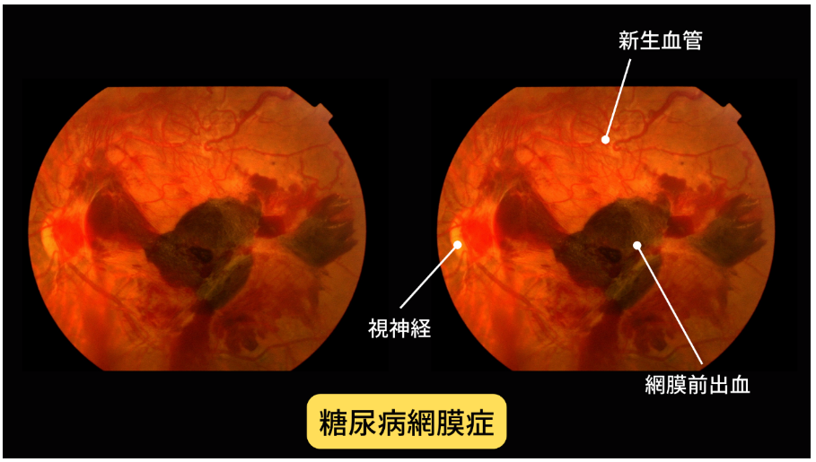

問題 1
糖尿病で視力が低下する仕組みとして正しいものはどれですか？
眼球の透明な組織の混濁と、網膜の機能が失われること
眼圧の上昇のみ
角膜の屈折異常のみ
視神経の圧迫のみ
解説：糖尿病で視力が低下する仕組みは2つあります。1つは眼球の透明な組織が混濁すること（白内障、水泡性角膜症、硝子体出血など）、もう1つは光を感じる神経である網膜の機能が失われることです。
問題 2
糖尿病網膜症における2大失明原因として正しいものはどれですか？
牽引性網膜剥離と血管新生緑内障
白内障と角膜混濁
硝子体出血と黄斑浮腫
ドライアイと結膜炎
解説：糖尿病による直接的な2大失明原因は、牽引性網膜剥離と血管新生緑内障です。どちらも糖尿病によって網膜の血管が損傷される糖尿病網膜症によって引き起こされます。

糖尿病網膜症の眼底写真：新生血管と網膜前出血が見られる
患者様への説明ポイント：糖尿病網膜症は放置すると失明に至る可能性があることを説明し、定期的な眼底検査の重要性を伝えましょう。
問題 3
糖尿病黄斑浮腫について正しいものはどれですか？
早期なら血糖コントロールで治る可能性がある
一度発症したら治療法はない
視力には影響しない
網膜の周辺部にのみ影響する
解説：糖尿病黄斑浮腫は、早期であれば血糖をコントロールすることで血管からの漏出が減って治る可能性があります。黄斑に水ぶくれが生じると、物がかすんだり歪んで見えたりして視力が低下します。
患者様への説明ポイント：「まだ見えているから大丈夫」と思っている患者様には、早期治療で視力が回復・維持できる可能性があることを伝えましょう。
問題 4
新生血管ができる原因となる物質は何ですか？
VEGF（血管内皮増殖因子）
インスリン
ヘモグロビン
コレステロール
解説：網膜の血管が閉塞すると、酸素を供給しようとしてVEGF（血管内皮増殖因子）という物質が放出され、新生血管が作られます。しかし新生血管は正常な血管と異なり、出血しやすく視力低下につながります。
問題 5
糖尿病網膜症と血糖管理について正しいものはどれですか？
高血糖も重症低血糖も網膜症を進行させる
低血糖は網膜症に影響しない
血糖値は低ければ低いほど網膜症に良い
高血糖のみが網膜症のリスク因子である
解説：高血糖が続くことが糖尿病網膜症の原因ですが、経過中に他人の介助を必要とするような重症の低血糖症は、糖尿病網膜症を急激に進行させます。血糖の乱れ（高血糖・低血糖の両方）が網膜症のリスク因子です。
患者様への説明ポイント：患者様には「血糖は高すぎても低すぎてもダメ」ということを伝え、急激な血糖変動を避ける重要性を説明しましょう。
問題 6
血管新生緑内障について正しいものはどれですか？
眼圧が50mmHgを超えることもあり、通常の点眼薬では下がらない
通常の緑内障と同じ治療で対応できる
眼圧は正常範囲内に保たれる
自然に治癒することが多い
解説：血管新生緑内障は、新生血管が房水の排水口（線維柱帯）を塞ぐことで異常に眼圧が上昇します。通常21mmHg以下が正常のところ、50mmHgを超えることもあり、通常の点眼薬や飲み薬では眼圧が下がりません。
患者様への説明ポイント：糖尿病網膜症が進行すると緑内障も合併しうることを説明し、定期検査の重要性を伝えましょう。
問題 7
汎網膜光凝固（レーザー治療）の目的として正しいものはどれですか？
酸素不足の網膜神経細胞を凝固してVEGF産生を止める
白内障を治療する
眼圧を下げる
角膜の透明性を回復させる
解説：汎網膜光凝固は、酸素を受け取れなくなった網膜の神経細胞をレーザーで凝固して間引くことで、VEGF産生を止める治療です。この治療が糖尿病網膜症を失明原因の首位から3位まで下げることができた主な原因です。
問題 8
糖尿病網膜症を進行させる全身因子として、適切「でない」ものはどれですか？
解説：糖尿病網膜症を進行させる全身因子として、血糖の乱れ（高血糖・低血糖）、高血圧、腎機能低下、妊娠、喫煙などが挙げられます。高尿酸血症は直接的な進行因子としては挙げられていません。
問題 9
糖尿病網膜症の発症・進展を予防できるとされるHbA1cの目標値はどれですか？
7.0％未満
8.0％未満
6.0％未満
9.0％未満
解説：血中ヘモグロビン（Hb）A1cが7.0％未満を維持すれば、糖尿病網膜症の発症・進展が予防できることが示唆されています。内科受診時に自分のHbA1c値を記憶する習慣を身につけることが大切です。
患者様への説明ポイント：患者様には「HbA1cの値を覚えておいてください」とお伝えし、内科との連携の重要性を説明しましょう。
問題 10
患者様から「糖尿病と言われたけど目は見えているから眼科は必要ない」と言われた場合、最も適切な説明はどれですか？
自覚症状がないうちに進行し、症状が出た時には失明の危機のことが多いので早期受診が必要
見えているなら眼科受診は不要なので、視力が下がってから来てもらえばよい
糖尿病の薬を飲んでいれば網膜症にはならないので心配ない
若い人は網膜症にならないので高齢になってから受診すればよい
解説：糖尿病網膜症の困った特徴は、症状が自覚されないうちに進行し、自覚症状が現れたときには既に失明の危機に瀕した状態であることがほとんどです。糖尿病と診断されたら、血管閉塞が生じる前に早期に眼科を受診することが大切です。
 正常な眼底写真：自覚症状がないうちはこのように見える
正常な眼底写真：自覚症状がないうちはこのように見える
糖尿病網膜症の眼底写真：自覚症状が出た時には既にここまで進行していることが多い
患者様への説明ポイント：「見えているから大丈夫」は危険なサインです。運転免許証や仕事を失わないためにも、無症状のうちから定期検査を受ける重要性を強調しましょう。